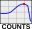

Maximum Count Rate Analysis¶
Determines the image with the maximum counts from a series of Gamma Camera images. A single multiframe image can be used or a series of images. The analysis can be opened by clicking the  button on the Nuclear Medicine Tool Bar or by selecting ‘MCR’ from the Nuclear Medicine analysis menu. Currently there are no settings available.
Please see Max Count Rate in the Pylinac documentation for more information.